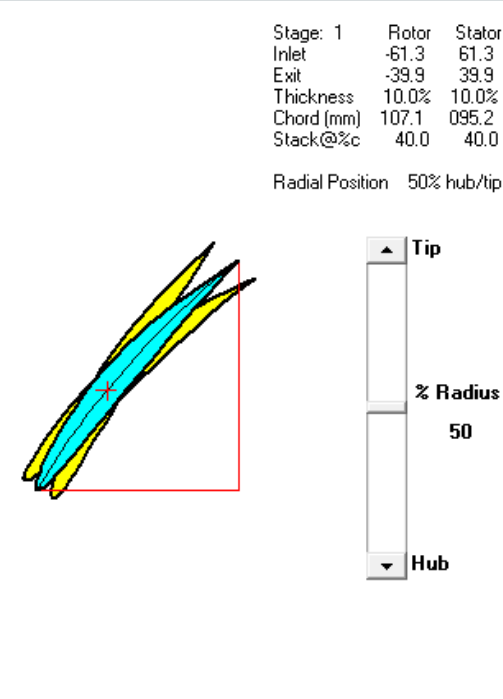
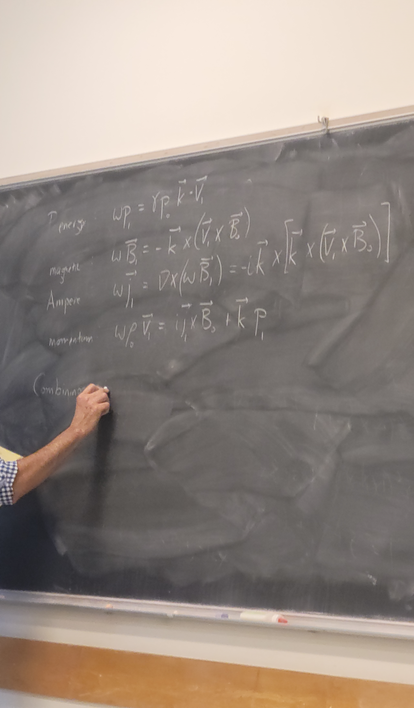
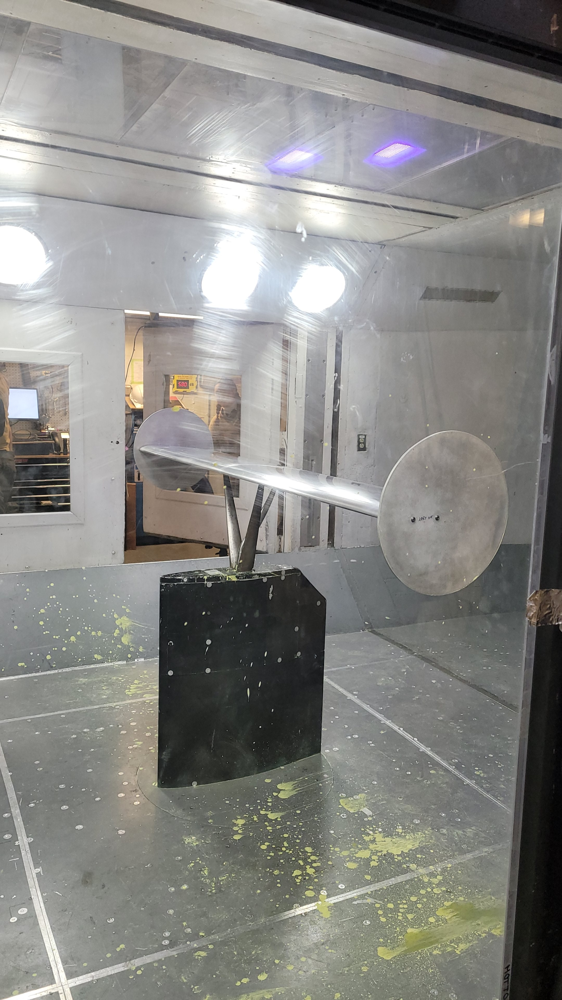
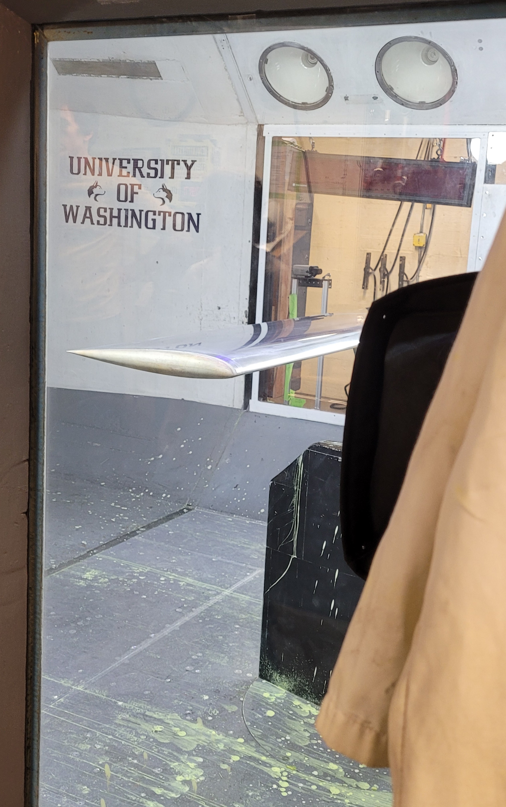

Reports
Written technical reports from coursework at the University of Washington, covering design, analysis, and lab procedure.

University of Washington · Jan–Mar 2024
Designed a gas turbine engine core — compressor, combustor, and turbine — optimizing performance, cost, and mass flow rate using COMPR, TURBN, and CEARUN.
Read Report →
University of Washington · Jan–Mar 2024
Investigated plasma waves and turbulence in space plasma, exploring space plasma dynamics using Langmuir probes.
Read Report →
University of Washington · Jan–Mar 2024
Analyzed four airfoils (NACA 0010, 1410, 2410, and 6409) using MATLAB and XFOIL, focusing on viscous effects and aerodynamic performance.
Read Report →
Aerospace Instrumental · Sep–Dec 2022
Measured voltage, current, and resistance against Ohm’s Law, analyzing tolerance discrepancies and using MATLAB to control an LED.
Read Report →